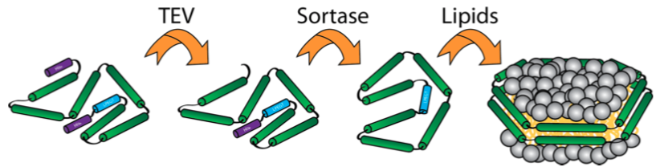

Membrane proteins (MP) perform multiple important functions in the body, but are notoriously difficult to handle due to partly hydrophobic, partly hydrophilic nature. Many different systems are developed with the aim of keeping MPs in solution in a functional state, however, all of the methods have drawbacks. In our group, we are using and developing the nanodisc, which consists of two ‘belt-proteins’ surrounding a lipid bilayer to form a disc (see the figure). It is possible to insert a MP in the nanodisc, and studies have shown that the function of many MPs in nanodiscs are similar to native-conditions. When performing structural investigations on nanodiscs in solution, it is highly important to have a monodisperse sample, which is often not the case. Recently, a group published a paper with a ‘circularized’ nanodisc, where the belt proteins were ‘locked’ together by the use of the enzyme Sortase. This is a very promising method that we are also working on in our lab, and the aim of this project is to develop circularized nanodiscs in different sizes suitable for different MPs and structural techniques.
 Left: Model of a nanodisc. Right: Overview of the Sortase reaction forming the circularized nanodisc.
The experimental work will mainly be conducted in the group of Lise Arleth. The lab is very well equipped with biophysical instruments, and we have easy access to specialised equipment at collaborators at the HCØ institute. You will be working in a multidisciplinary environment among PhD students and post docs with backgrounds in physics, nanoscience and biochemistry. The project is meant to be a master’s thesis, and previous work (from BA project e.g.) with cloning and protein expression and purification is a requirement.